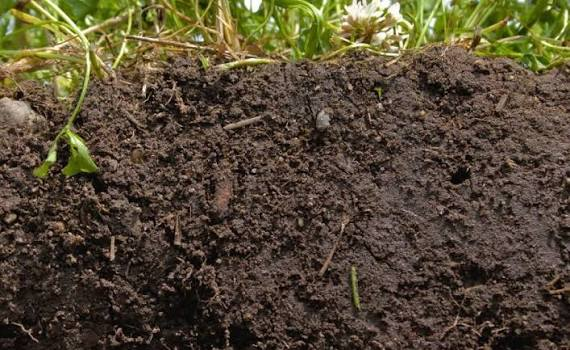
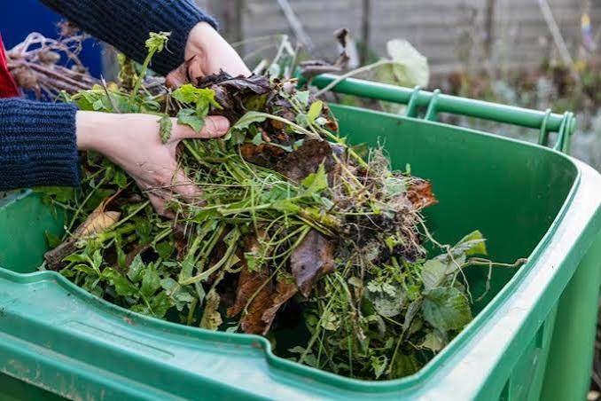
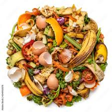
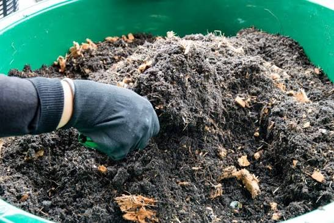

FROM WASTE TO POSSIBILITY
What we throw away
What we throw away
can become something more.
Organic waste does not have to be the end of the journey. With the right approach, everyday waste can return to the natural cycle in a more meaningful way.

01
Food Scraps

01
Rich Soil

02
Garden Waste
02
New Growth

03
Organic Waste

03